and 50 Binary Messages
The decoder has been tested on an XP PC, and believe it should work on all Windows PC's after 98. Other users report it works on Vista, Win 7, Win 7-64, Win 8, Win 8.1 and Linux (Wine).
| Lower Manhattan |
Immingham UK Docks |
| 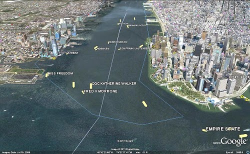 | 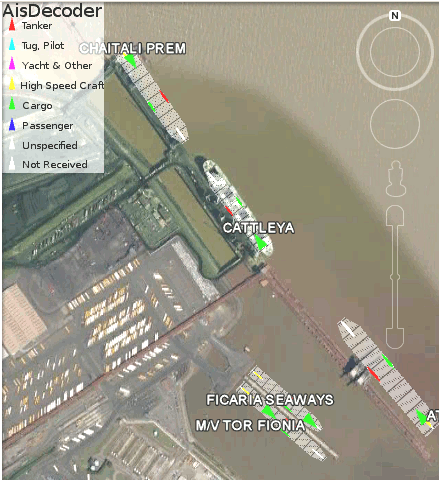 |
Ais Decoder accepts AIS data from an AIS Receiver, the Internet or a Local Network connection, decodes the data and presents the decoded data in a form suitable for display and analysis by mapping program (eg Google Earth or Google Maps), or for analysis using Excel, or by a database (eg MySql).
Main Features
| Input: | Serial or USB from AIS receiver, UDP or TCP from network, Log File |
| Input Filter: | AIS Message type, DAC, FI, ID, MMSI |
| Output: | Display, File, FTP, UDP |
| Output Frequency |
As received or at Scheduled intervals |
| Output Filter: | Lat/Lon or any other decoded field |
| Output Formats: | Text, CSV, HTML, XML, KML, KMZ, NMEA |
| Self-extracting installation file, including help | |
| PDF Help Manual |
AIS
AIS is primarily transmitted by ships for collision avoidance. Ships over 200 tons must carry an AIS transponder which both transmits and receives AIS data, enabling vessels to see the speed and course (and other information) of vessels within around 20 miles of one another. It is also used by the Coast Guard and port authorities to monitor vessel movements. Other uses are becoming more common, such as Virtual Navigation Aids, weather and sea state reporting, control of inland waterways such as canals and locks. Anyone with a suitable receiver can receive this data.
AisDecoder Specification
- Decodes all 27 Ais Messages types
- Decodes VDM or VDO
sentences (!AIVDM,
!AIVDO, !BSVDM,
!ABVDM etc) messages
- Decodes 50 Binary message types
- All fields are fully
decoded on Detail display
- Input Logging with optional daily roll-over
- Decodes messages at 40k-200k/min
on 2GHz
XP PC (dependant on options selected)
- NMEA input monitor
- UDP TCP, USB and Serial
(RS232) Input
- Input filtering by AIS message type and/or binary message DAC/FI/ID
- Input filteriing by MMSI
- GPS NMEA (time stamp)
sentences decoded
- Message Summary display
- Dual Channel Output to File or UDP
- Display file
and/or UDP output
- NMEA or Formatted Output
- Batch (Scheduled) Output by MMSI for web site upload
- Batch output of latest messages by UDP
- Automatic FTP upload to web site
- Decoded CSV Output for import to Excel
- Display Ships on Google Earth
- Display
Ships on
Google Maps
- KML,
KMZ or XML Output to
Google Earth
or Google Maps
- HTML
output to
website
- Output format may be tailored to individual requirements
- Output filtering by individual AIS Message Fields
- Output filtering by any Field value (for example Area by Latitude and Longitude)
- Reads NMEA log files
- Filters NMEA AIS log files by all message types and all AIS fields
- Reads ShipPlotter spnmea log files
- Can be run like a Server
There is also a PDF extraction of this file here.
How AIS data is Encoded
AIS data is encapsulated within the Marine Standard NMEA protocol, which defines Standands for communication between wired electonic ship devices. NMEA defines many different sentences, two of which are normally used for containing AIS data named !AIVDM and !AIVDO. The content of both these sentences are identical (!AIVDM is transmitted, !AIVDO is on board).
Transmission
For transmission the !AIVDM sentences are sent in individual packets using a system called TDMA (Time Division Multiple Access). If two transmitters sent data at exactly the same time, a receiver with range of both transmitters would pick up garbled packets. TDMA organises AIS transmitters in such a way that each AIS transmitter does not try and transmit their own data packets at exactly the same time as another transmitter within range. Each packet transmitted lasts for exactly 26.670 milliseconds and is transmitted on a VHF channel within the marine radio band. The transmission of one packet is called a slot, during which time exactly 168 bits of data can be sent. If a NMEA sentence contains more than 168 bits, multiple slots are used, the complete message being re-assembled by the AIS receiver. This splitting of a AIS message into packets for transmission and the re-assembly by the receiver is transparent to AisDecoder, however the control of the slots uses specific AIS messages, which are decoded.
NMEA Sentences
NMEA sentences are split into words separated by a comma, and have a maximum length of 80 characters.
eg !AIVDM,1,1,,B,13PRrB0000OvbS@NhA9=oPbr0<0u,0*58
The first word !AIVDM is the name of the sentence, the last 2 characters are the checksum.
The AIS Payload is the 6th word - 13PRrB0000OvbS@NhA9=oPbr0<0u
As the maximum size of the whole sentence is 80 characters, the payload can be no longer than 51 characters, and may be shorter.
Because the permitted characters in a NMEA sentence are a subset of the 8-bit ASCII character set, and the payload must be able to contain all bits, each 8 bit character in the payload can only represent 6 bits of data. Every 6 bits of AIS data has to be encoded into one 8 bit ASCII character, prior to transmission. One NMEA AIS sentence can only contain a maximum of 306 bits.
If an AIS message is longer than 306 bits, each AIS message must be split into "multi-part" NMEA sentences. Words 2,3 and 4 are the no of parts, this part and a part id. The 5th word is the AIS radio channel which has been used for transmission.
AIS Messages
AIS messages are contained entirely in the payload (6th) word of a NMEA sentence or in the case of multi-part messages in multiple payloads, after re-assembly by the decoder. The messages, of which there are 27 basic types, are split into separate fields. Each field contains a number of bits. These fields are also encoded as they could represent numerical data (eg speed) or textual data (eg vessel's name) or require conversion from a numeric code to a meaningful description (eg type of vessel where 50 = Pilot Vessel). AisDecoder decodes around 1500 separate fields.
The first 3 fields of AIS messages are always Message type, Repeat indicator and MMSI.
Binary AIS Messages
AIS messages 6,8, 25 and 26 are called binary messages because the content of the decoded message can in itself contain binary data. In the case of the first two (6 and 8) these messages are further subdivided to a further two or three sub levels of different types messages.
The first sub level is by Designated Area Code (DAC) for example where DAC=1 is for international messages.
The next sub level is by Function Identifier (FI) for example where 2 = Vessel/Lock scheduling
The next sub level is by Identifier (ID) for example where 1 = Lockage order
Sample
Displays and Outputs
NMEA Input (Time Stamp
Appended)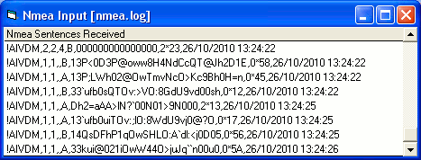
Summary Display
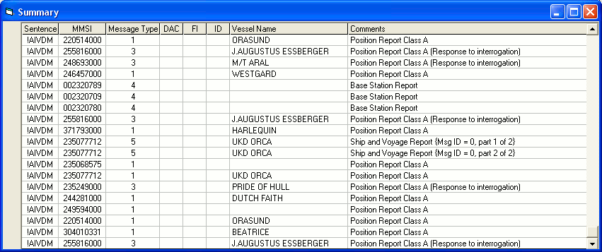
Detail Display
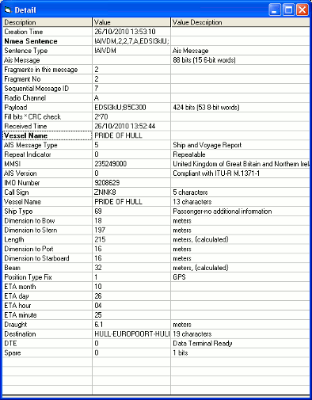
Google Earth Display
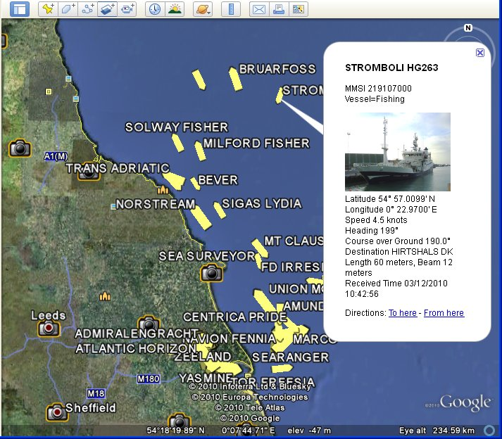
HTML Browser Display
You can output any message fields - this is a simple example
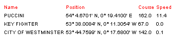
Source of HTML Browser Display
(Browser may wrap lines)
<!DOCTYPE HTML PUBLIC "-//W3C//DTD HTML 4.01 Transitional//EN" "http://www.w3.org/TR/html4/loose.dtd">
<html><head>
<title>Ais Decoder</title>
<meta http-equiv="Content-Type" content="text/html; charset=iso-8859-1">
<style type="text/css">
<!--
.html_head {font-size: 10px; color: #000000; font-family: arial, sans-serif; }
.content_header {color: #ff0000; }
-->
</style>
</head>
<body>
<table class="html_head">
<tr class="content_header"><td>Name</td><td>Position</td><td>Course</td><td>Speed</td></tr>
<tr><td>PUCCINI</td><td>54° 4.3101' N, 0° 19.6000' E</td><td>165.0</td><td>11.4</td></tr>
<tr><td>KEY FIGHTER</td><td>53° 38.0090' N, 0° 11.3053' W</td><td>190.0</td><td>0.0</td></tr>(Browser may wrap lines)
<tr><td>CITY OF WESTMINSTER</td><td>53° 44.7599' N, 0° 17.6800' W</td><td>142.0</td><td>0.1</td></tr>
</table></body></html>
Google Maps XML Display Simple Example
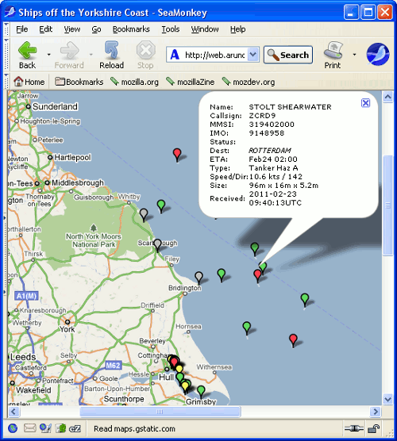
XML Example Source of Google Maps Display
<markers>
<marker lat="53.648310" lon="-0.208423" name="FS PHILIPPINE" dx="0.000" dy="0.000" type="Tanker-carrying DG,HS,MP,IMO haz or pollutant X" ais="228320800!9310305!FMDU!IMMINGHAM!0222:0930!0.0!79.0!!Under way sailing (Rule 25)!140!23!8.8!22/02/2011 17:40:57!Ship and Voyage Report"/>
<marker lat="54.035500" lon="0.206833" name="" dx="0.000" dy="0.000" type="" ais="250000962!!!!:!13.3!135.0!!Under way using engine (Rule 23(a) or Rule 25(e))!!!!22/02/2011 17:40:57!"/>
<marker lat="53.738860" lon="-0.260938" name="" dx="0.000" dy="0.000" type="" ais="304970000!!!!:!0.0!285.0!!Under way using engine (Rule 23(a) or Rule 25(e))!!!!22/02/2011 17:41:03!"/>
<marker lat="54.441670" lon="0.698505" name="" dx="0.000" dy="0.000" type="" ais="419504000!!!!:!11.0!139.0!!Under way using engine (Rule 23(a) or Rule 25(e))!!!!22/02/2011 17:40:59!"/>
</markers>
Google Maps KML Server Simple Example

CSV Output All Fields - File
(Browser may wrap lines)
23/02/2011 10:43:36,,!AIVDM,1,1,,1,0,235475000,235,0,0,0.0,0,-0.294167,53.746000,39.0,272,33,0,0,0,0,0,4,1394
23/02/2011 10:43:36,,!AIVDM,1,1,,1,0,235475000,235,0,0,0.0,0,-0.294167,53.746000,39.0,272,33,0,0,0,0,0,4,1394
23/02/2011 10:43:36,AMANDINE,!AIVDM,2,2,4,5,0,253047000,253,1,9424871,LXAM,AMANDINE,71,146,49,195,15,15,30,1,02,23,07,00,7.2,KILLINGHOLME,0,0
23/02/2011 10:43:36,,!AIVDM,1,1,,1,0,232079000,232,0,0,15.8,0,0.257683,53.836980,335.0,332,38,0,0,1,0,0,0,2253
23/02/2011 10:43:36,CORAGGIO,!AIVDM,1,1,,1,0,247188200,247,0,0,0.1,0,-0.230233,53.666580,144.0,144,35,0,0,0,0,0,1,10,43
23/02/2011 10:43:37,,!AIVDM,1,1,,1,0,232003329,232,0,-128,3.4,0,0.625418,53.970200,20.0,511,38,0,0,0,0,0,7,18
23/02/2011 10:43:37,AMUR 2524,!AIVDM,1,1,,1,0,273324000,273,0,-127,6.7,0,0.452878,54.147750,150.0,156,39,0,0,0,0,0,0,2294
23/02/2011 10:43:37,,!AIVDM,1,1,,1,0,236263000,236,0,16,13.7,0,0.400488,54.035790,324.0,323,38,0,0,1,0,0,2,1450
23/02/2011 10:43:37,SIGAS CHAMPION,!AIVDM,1,1,,1,0,564120000,564,0,0,11.4,0,-0.137148,54.574670,327.0,326,39,0,0,0,0,0,5,1
23/02/2011 10:43:37,,!AIVDM,1,1,,1,0,308583000,308,0,-127,2.5,0,0.548317,54.574230,175.0,176,40,0,0,1,0,1,1,24,60
CSV Output All Fields - Display
(for clarity the first 2 columns are removed)
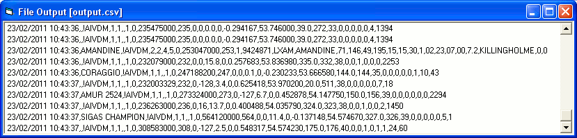
CSV Output All Fields - Excel
(for clarity the first 2 columns are removed)
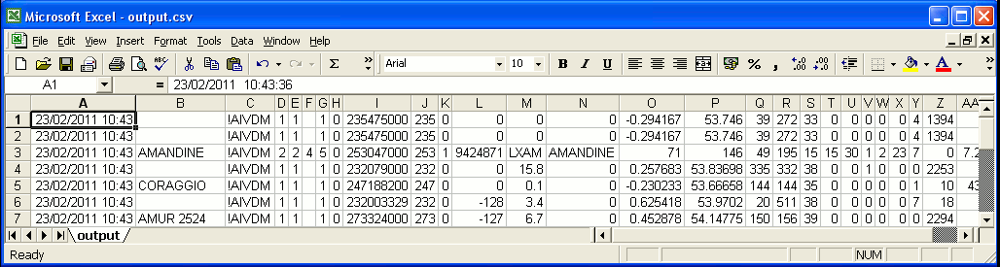
CSV Decoded Output Selected Fields - File
(Browser may wrap lines)
247188200,CORAGGIO,53° 39.9950' N,0° 13.8140' W,0.0,144.0
253047000,,53° 40.1143' N,0° 13.9960' W,0.0,324.0
253310000,,53° 39.9479' N,0° 13.8860' W,0.0,144.0
273324000,AMUR 2524,54° 11.4175' N,0° 24.2075' E,6.7,148.0
308282000,TOISA DEFIANT,54° 15.6109' N,0° 19.2650' E,11.1,335.0
308583000,OCEAN SPRITE,54° 35.5371' N,0° 32.7160' E,2.0,176.0
319402000,STOLT SHEARWATER,54° 2.4300' N,0° 26.7200' E,10.1,147.0
477720300,STAR SEA BULKER,53° 38.2599' N,0° 11.7100' W,0.0,33.0
518408000,SWAN DIANA,54° 11.1028' N,0° 0.0398' E,7.7,316.0
564120000,SIGAS CHAMPION,54° 30.0817' N,0° 3.4236' W,11.1,328.0
CSV Output Selected Fields - Display
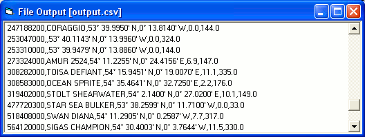
CSV Output Selected Fields - Excel
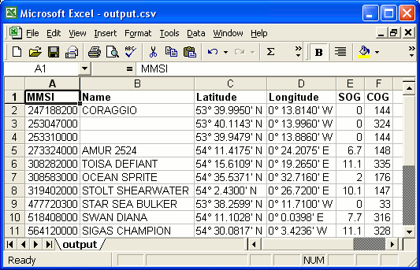
SPNMEA input file
!AIVDM,1,1,,A,13;5<D001L00<t8NwVI5ATEF08Kc,0*7A
$GPZDA,123047,14,08,2010,+00,00*6E
!AIVDM,1,1,,A,13Pi8L0P00023hjNrlsA8?wP0<0F,0*02
!AIVDM,1,1,,A,14WU7D0OiqOwteBNw@5L`awP0D0D,0*78
$GPZDA,123048,14,08,2010,+00,00*61
!AIVDM,1,1,,A,14Uumt0Oi:00GQ0O;Ab6FTuR0L0>,0*36
!AIVDM,1,1,,A,14QsCa002Gww>8LO1T6<A9uP0D0A,0*64
!AIVDM,2,1,1,A,58UQ<802@Vj9TaIWV20pE@PE8h4pB1@T@F22220l2Hk8865E0<Tm<p8888888888,0*46
!AIVDM,2,2,1,A,8888880,2*25
$GPZDA,123049,14,08,2010,+00,00*60
SPNMEA input file, File Output All Fields - Display
(for clarity the first 2 columns are removed)
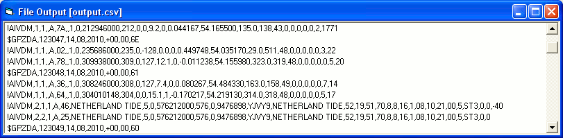
SPNMEA input file, CSV Output Selected Fields - Display
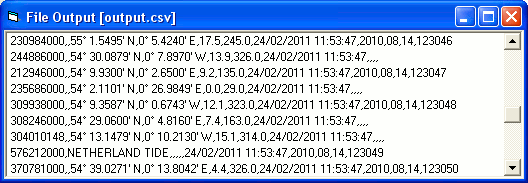
SPNMEA input file, CSV Output Selected Fields - Excel
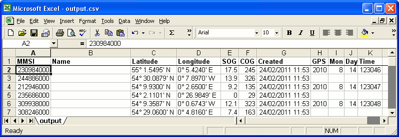